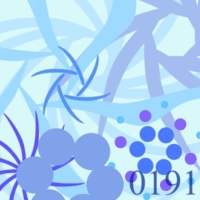
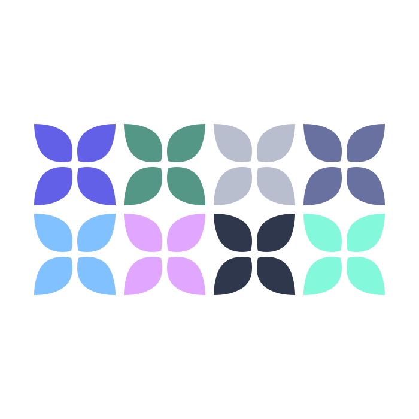
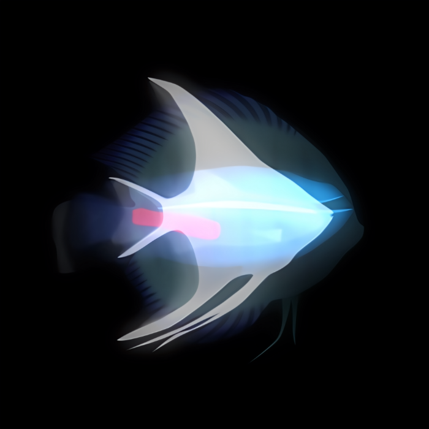

Album de ころんば
0191
Nom: 0191
Date: 2010
Nombre de titre: 1

Rain
Nom: Rain
Date: 2011
Nombre de titre: 8

魚の夜夢の夜
Nom: 魚の夜夢の夜 (Sakana no Yoruyume no Yoru)
Date: 2014
Nombre de titre: 4

精神安定剤
Nom: 精神安定剤 (Seishin Anteizai)
Date: 2014
Nombre de titre: 4